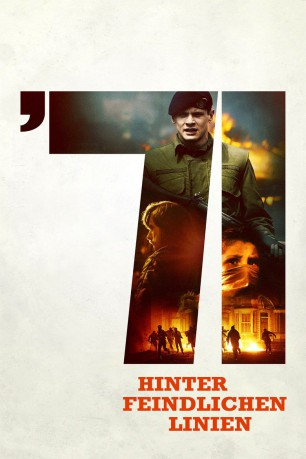
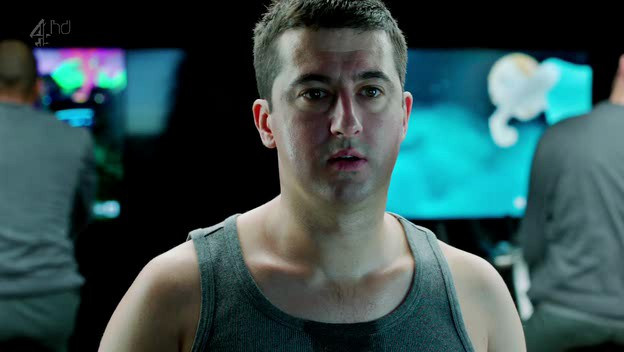
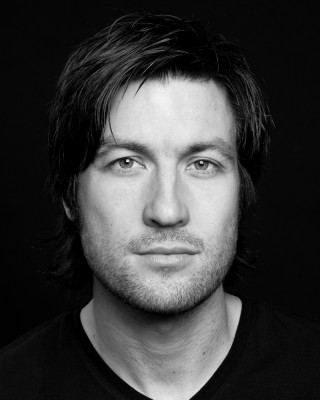

#3870 '71: Hinter feindlichen Linien
Alternativ: '71
 
 IMDB-Wertung: 7.2 / 10
IMDB-Wertung: 7.2 / 10  Metascore: 0
Metascore: 0 
1971: Der Nordirland-Konflikt eskaliert zum Bürgerkrieg. Der unerfahrene englische Rekrut Gary wird zum Einsatz nach Belfast bestellt. Die Situation dort gilt selbst für erfahrene militärische Befehlshaber als unübersichtlich und überfordernd. Die Stadt ist geteilt in „loyale“ protestantische und „feindliche“ katholische Areale. Beide Gebiete verfügen über paramilitärische Einheiten. Darüber hinaus versuchen auch radikale Straßenbanden und verdeckte Ermittler aller Seiten ihre Interessen auf eigene Faust durchzusetzen. Während eines Streifzugs geraten Gary und sein Trupp in ein Handgemenge mit einem wütenden katholischen Mob. Gary wird von seiner Einheit getrennt und muss sich nun mitten im Feindesland allein behaupten. Auf dem Weg zurück zu seinem Stützpunkt erlebt er eine Nacht voller Ungewissheit, Angst und Verzweiflung...
Jahr: 2014
Dauer: 99 Minuten
FSK: 16
Land: England Studio: Ascot Elite Home EntertainmentTonspuren: DTS - ,
Untertitel: Deutsch,
Auflösung: 1080p (1920x808) Größe: 8120 MB
Genre: Action, Thriller, Drama, Krieg
Regisseur: Yann Demange
Drehbuch: Elizabeth McNeill
Soundtrack:
Darsteller:
 Jack O'Connell als Gary Hook
Jack O'Connell als Gary Hook Jack Lowden als Thommo
Jack Lowden als Thommo-  Paul Popplewell als Training Corporal
 Adam Nagaitis als Jimmy
Adam Nagaitis als Jimmy- Joshua Hill als Carl
 Babou Ceesay als Corporal
Babou Ceesay als Corporal Sam Reid als Lt. Armitage
Sam Reid als Lt. Armitage Sam Hazeldine als C.O.
Sam Hazeldine als C.O. Sean Harris als Captain Sandy Browning
Sean Harris als Captain Sandy Browning Paul Anderson als Sergeant Leslie Lewis
Paul Anderson als Sergeant Leslie Lewis- Amy Molloy als Mother in Raided House
- Valene Kane als Orla, Spitting Woman
- Aaron Lynch als Young Boy at Riot
 Barry Keoghan als Sean Bannon
Barry Keoghan als Sean Bannon Martin McCann als Paul Haggerty
Martin McCann als Paul Haggerty Killian Scott als Quinn
Killian Scott als Quinn-  Liam McMahon als O'Brien
 David Wilmot als Boyle
David Wilmot als Boyle- Corey McKinley als Loyalist Child
 Paul Kennedy als Johnny
Paul Kennedy als Johnny Chris Patrick-Simpson als Older Loyalist
Chris Patrick-Simpson als Older Loyalist- Jim Sturgeon als Sergeant John Vickers
- Richard Dormer als Eamon
- Paul Bergquist als Local Resident , uncredited
 Paul J. Dove als Rioter , uncredited
Paul J. Dove als Rioter , uncredited- Nick Gordon als Physical Training Instructor , uncredited
- Kenton Hall als Loyalist Drinker , uncredited
- Emily Maguire als Young Woman , uncredited
 Hugh O'Brien als Funeral Mourner , uncredited
Hugh O'Brien als Funeral Mourner , uncredited- Ernest Vernon als Rioter , uncredited
- Ben Williams-Lee als Recruit Soldier
- Jonah Russell als Barracks Officer
- Harry Verity als Darren
- Peter McNeil O'Connor als Warden
 James McArdle als Sergeant
James McArdle als Sergeant- Ben Peel als RUC Officer
- Andy Moore als RUC Man, Bathroom
- Tom Cowling als Large Soldier
- Gerard Jordan als Huge Man
- Denise Gough als Lillian Hughes, Protective Woman at Riot
- Aaron Monaghan als McCann
- Dawn Bradfield als Sean's Mum
- Eabha MacCabe als Sean's Little Sister
- Emmet Kirwan als Gang Member 2
- Barry Barnes als Jake Fullarton
- Terence Keeley als Younger Loyalist
- Cathy White als Good Samaritan
 Charlie Murphy als Brigid
Charlie Murphy als Brigid- Margaret Bell als Bin Lid Lady , uncredited
- Lee Bolton als Irish Rioter , uncredited
Datei: X:\2014(A-F)\'71 Hinter feindlichen Linien (2014, FSK16, 1920x808).mkv seit 23.06.2016
Festplatte: HD 2013(I-Z)-2014(A-Z)
 Es gibt insgesamt 119 Filme in der Gruppe '2014(A-F)'
Es gibt insgesamt 119 Filme in der Gruppe '2014(A-F)'